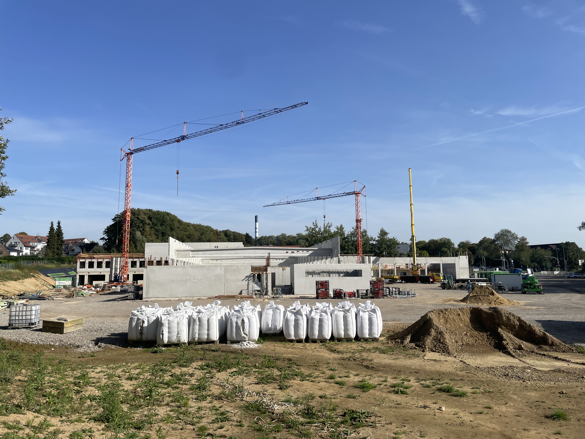
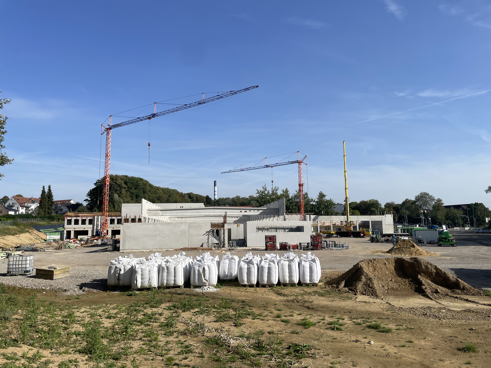

Die Tutic Bau GmbH ein renommiertes Bauunternehmen, das eine
breite Palette von professionellen Leistungen im Bauwesen anbietet.
Mit unserer langjährigen Erfahrung und Expertise sind wir in der Lage, Bauvorhaben unterschiedlicher
Art und Größe erfolgreich umzusetzen. Unsere Leistungen umfassen den Hochbau, wo wir Wohngebäude,
Bürokomplexe und Gewerbebauten errichten. Mit unserer fachkundigen Planung und Ausführung schaffen
wir
Räume, die den Bedürfnissen und Anforderungen unserer Kunden gerecht werden.
Im Tiefbau sind wir erfahren in der Konstruktion von Straßen, Brücken, Kanalisationssystemen und
anderen Infrastrukturprojekten.
Wir legen großen Wert auf Qualität und Effizienz, um nachhaltige und langlebige Ergebnisse zu
erzielen.
Unsere Expertise erstreckt sich auch auf die Sanierung und Renovierung von Bestandsgebäuden. Wir
kümmern uns um den Umbau und die Modernisierung, um den aktuellen Standards und Ansprüchen gerecht
zu
werden.
Als Bauunternehmen, das schlüsselfertiges Bauen anbietet, übernehmen wir die gesamte Verantwortung
für den Bauprozess von der Planung über die Umsetzung bis zur schlüsselfertigen Übergabe.
Kunden können sich auf uns verlassen, um ihre Visionen in die Realität umzusetzen.
Unser erfahrenes Projektmanagement-Team gewährleistet eine reibungslose Koordination und Überwachung
von Bauprojekten. Wir kümmern uns um alle Aspekte des Projekts, von der Budgetierung bis hin zur
termingerechten
Fertigstellung.
Darüber hinaus bieten wir im Gewerbe- und Industriebau maßgeschneiderte Lösungen für Fabrikgebäude,
Lagerhallen und Produktionsanlagen. Unser Ziel ist es, optimale Arbeitsumgebungen zu schaffen, die
den
Anforderungen der jeweiligen Branche entsprechen.
Als Teil unserer Bemühungen um Nachhaltigkeit bieten wir auch energetische Sanierungen an, um die
Energieeffizienz von Gebäuden zu verbessern und den ökologischen Fußabdruck zu verringern.
Unser qualifiziertes Team von Fachleuten überwacht und leitet die Baustellen, um höchste
Qualitätsstandards und
Sicherheitsvorkehrungen zu gewährleisten. Wir arbeiten mit hochwertigen Baustoffen und modernster
Technologie, um herausragende Ergebnisse zu erzielen.
Als Tutic Bau GmbH sind wir stolz darauf, unseren Kunden eine umfassende Palette von Bau- und
Baumanagement-Dienstleistungen anzubieten. Mit unserer Verpflichtung zur Exzellenz und
Kundenzufriedenheit setzen wir Maßstäbe in der Bauindustrie und realisieren Bauvorhaben, die den
höchsten Ansprüchen gerecht werden.
- Tutic Bau GmbH:
Bauunternehmen mit breitem Leistungsangebot.
- Hochbau: von
Wohngebäuden, Bürokomplexen, Gewerbebauten.
- Tiefbau: von Straßen,
Brücken, Kanalisation, Infrastrukturprojekte.
- Qualitätsanspruch:
Nachhaltige, langlebige Ergebnisse; hohe Standards und Sicherheit.
- Sanierung & Renovierung:
und Modernisierung von Bestandsgebäuden.
- Schlüsselfertiges Bauen:
Planung bis Übergabe.
- Projektmanagement:
Budgetierung, Koordination, termingerechte Fertigstellung.
- Gewerbe- & Industriebau:
ösungen für Fabrikgebäude, Lagerhallen, Produktionsanlagen.
- Energetische Sanierungen:
Verbesserung der Energieeffizienz, Verringerung des ökologischen
Fußabdrucks.
- Team & Technologie:
Fachleute, modernste Technologien, hochwertige Baustoffe.
- Unternehmensziel:
Umfassende Dienstleistungen, Exzellenz, Kundenzufriedenheit,
Branchenstandards setzen.
 
